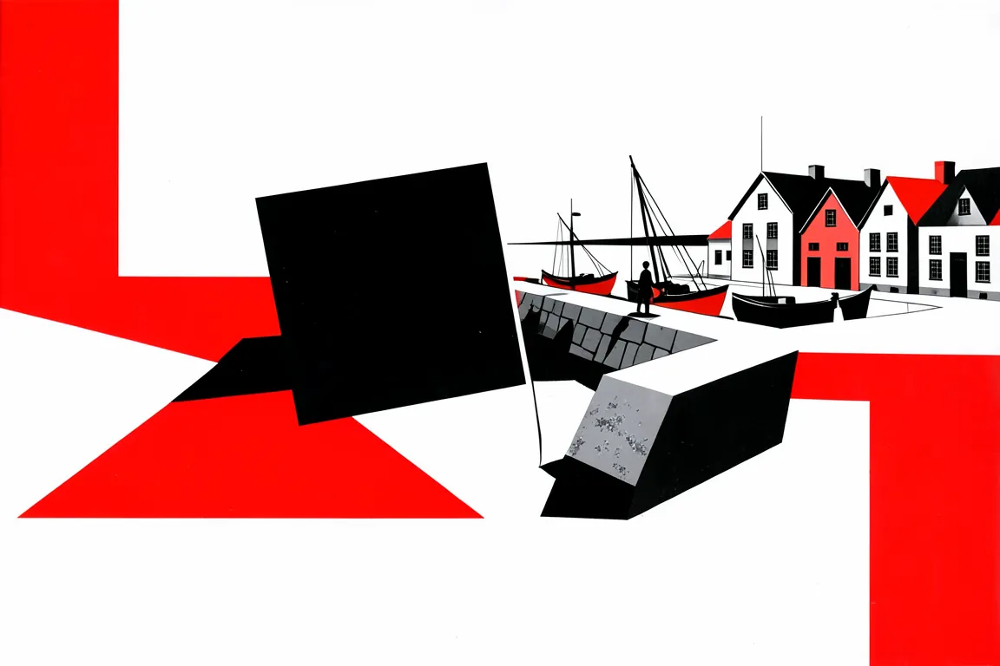

Flate geometriske former, som et kvadrat, en stang, en sirkel og et kors, som svever på et hvitt felt. Bildet viser ikke noe objekt: det viser ren følelse og en følelse av rom.

Kjerneidé
Kunsten bør frigjøre seg fra objektet: rene former i et grenseløst hvitt felt gir følelsen av form og av rom og ingenting annet.
Designprinsipper
Bygg bildet av 1 til 12 flate geometriske former: et kvadrat, et rektangel, en sirkel, et kors, en stang.
La formene sveve på et hvitt eller blekt felt, og la 50 til 70 % av bildet stå tomt.
Vipp formene 10° til 45° fra vertikalen, slik at de stiger, faller eller driver.
Begrens fargen til 2 til 4 flate fargetoner og svart, med hver form i én flat farge.
Mal formene med en hard, ren kant og uten penseltekstur i fargen.
Hold vekten i balanse ved størrelse og plassering, ikke ved symmetri.
Vis intet objekt, ingen horisont, ingen lyskilde og ingen skygge.
Antimønstre
Et gjenkjennelig objekt, en figur eller et landskap